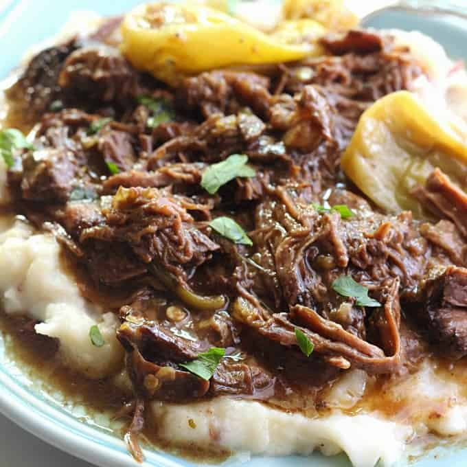

Mississippi Pot Roast

Recipe Description
The most delicious pot roast you will ever eat.
Made with just a few simple ingredients and slow cooked in the crockpot.
Ingredients
- Chuck Roast
- Salt
- Black Pepper
- Olive Oil
- Dry Ranch Mix Packet
- Au Jus Gravy Packet
- Butter
- Pepperoncini Peppers
- Mashed Potatoes
Steps
- Heat the Olive Oil in a frying pan.
- Season the Chuck Roast with Salt and Pepper.
- Sear both sides and the edges of the Chuck Roast until golden brown.
- Place the Chuck Roast in the Crock Pot.
- Sprinkle the Dry Ranch and Au Jus Packets over the Chuck Roast.
- Place the butter on the Chuck Roast.
- Place the Peppers on and around the Chuck Roast.
- Cook on low heat for 8 hours.
- Prepare the Mashed Potatoes separately in the meantime.
- Shred the cooked Chuck Roast with forks.
- Serve shredded Chuck Roast and Peppers over the Mashed Potatoes.